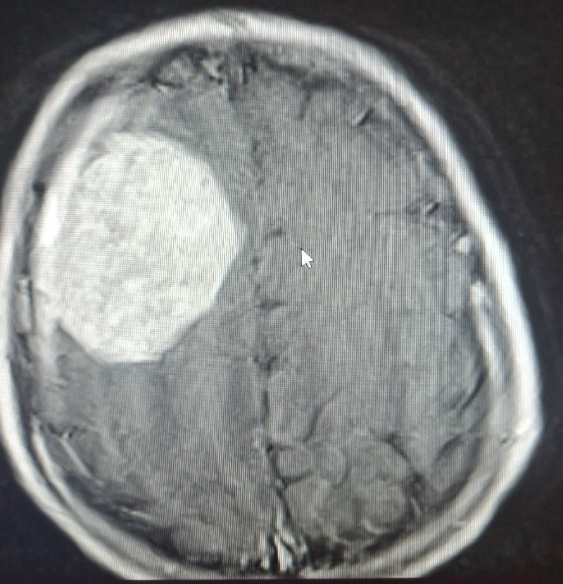
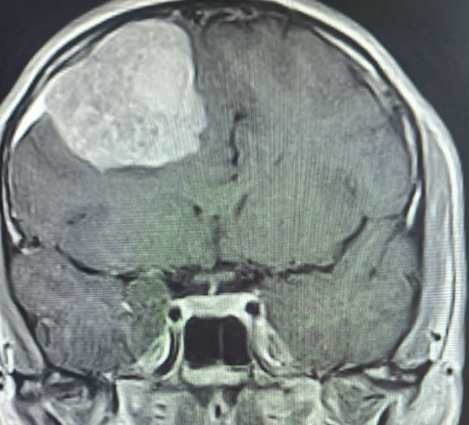
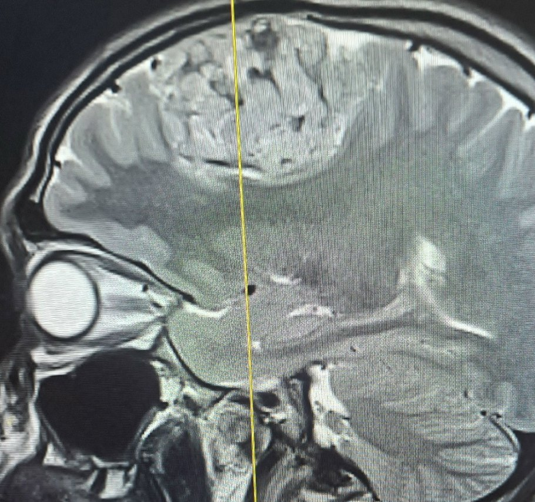
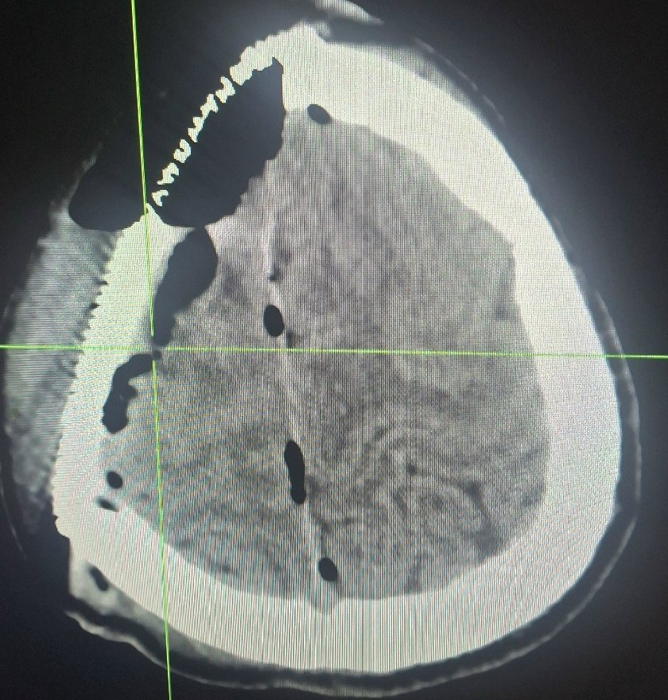
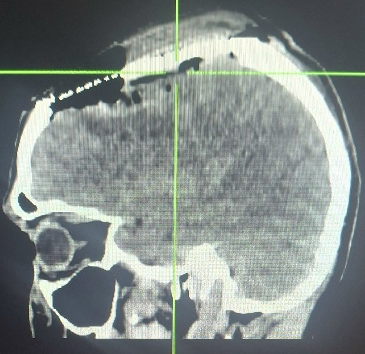
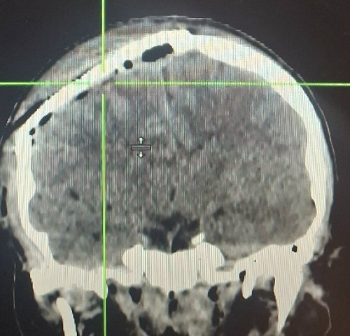
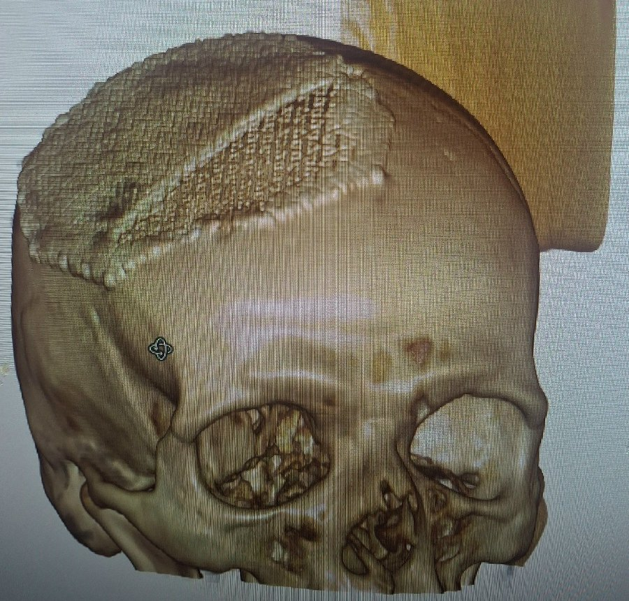

Головной мозг
Опухоль правой лобной и теменной долей
Объёмное образование в области центральных извилин с парасагиттальным распространением, с признаками повышенного внутричерепного давления и смещения структур мозга. Выполнена резекционная трепанация черепа в правой лобно-теменной области. Под операционным микроскопом опухоль выделена из мозговой ткани и удалена единым блоком. Костный дефект закрыт в ту же операцию титановой пластиной, смоделированной по форме трепанационного окна. Ткань опухоли направлена на гистологическое исследование.
До операции



После операции




Видео операции
Видео содержит кадры хирургического вмешательства.